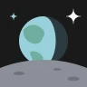

Fixture app
A README that uses every feature the
build renders; test/golden.test.ts builds it offline and compares every byte.
Note
An alert, with bold and a relative link.
Text between two alerts.
Caution
A second kind.
A footnote1 and struck text, and a bare link: https://example.com.
- a done task
- a task to do
| Language | Highlighted |
|---|---|
| Go | yes |
| Clojure | yes |
func main() { fmt.Println("hi") }
(defn greet [name] (str "hi " name))
[tool]
name = "fixture"

Licence
MIT
Footnotes
-
Footnotes render at the end. ↩